문제를 한 문장으로 정의하고, 그 문장으로 첫 화면을 만들어요
이번 주 내내 키울 '이커머스 셀렉트마켓 연말 이벤트 신청 페이지'의 출발점이에요. 화면보다 문장을 먼저 만들어요. 문제 정의 → 원인 → 가설·지표를 차례로 채우고, 그 문서를 근거로 클로드 아티팩트에서 첫 화면을 만들어요.
교육 개요
| 시간 | 09:00–18:00 (점심 12:00–13:00, 수업 8시간) |
|---|---|
| 교과 | [기본] AI 서비스 개발 · 2일차 (총 18일) |
| 교육 목표 | 문제 발굴 3요소로 문제를 정의하고, 5 Whys로 원인을 찾고, 가설과 지표를 세운 뒤, 그 문서를 근거로 만든 프로토타입을 프롬프트로 다듬을 수 있다. |
| 세션마다 같은 순서 | 개념 → 예시 → 실습 템플릿 → 프롬프트로 시작하기 → 점검·피드백 → 실패 케이스 → 결과 만들기 |
| 수업이 끝나면 | ① 타깃·현상·문제 3요소로 문제 정의 문장을 쓴다 ② 5 Whys로 바꿀 수 있는 원인까지 내려간다 ③ 가설 문장과 숫자 기준이 있는 지표 1개를 정한다 ④ 문제정의서를 근거로 아티팩트에서 이벤트 페이지 v1을 만든다 ⑤ 수정 요청서로 한 번에 하나씩 고치고 기록한다 |
수업 전 준비
- 클로드 로그인: 웹 버전 클로드를 열어 두세요. 오늘은 클로드 하나만 써요.
- 문서 한 개: 구글 문서나 메모장에 '문제정의서' 파일을 하나 만들어 두세요. 오늘 채우는 템플릿을 여기에 차례로 붙여 넣어요.
① 개념을 짧게 보고 ② 이커머스 셀렉트마켓으로 채운 예시를 봐요. ③ 빈 템플릿을 내 내용으로 채우고 ④ 같은 일을 프롬프트로 AI에게 시켜 봐요. ⑤ 결과를 점검 프롬프트로 피드백받고 ⑥ 일부러 실패해 본 뒤 ⑦ 오늘의 결과물로 남겨요. 프롬프트는 요청 / 내용 / 형식 3줄로 쓰고, 바꿔 넣을 자리는 [ ]로 표시했어요. 1주차 첫날 배운 4요소(역할·맥락·작업·형식)를 줄인 것이에요. 요청 = 작업, 내용 = 역할과 맥락, 형식 = 형식이에요.
타임테이블
| 시간 | 구분 | 내용 |
|---|---|---|
| 09:00–09:30 | 오늘의 단어 | 오늘의 단어 |
| 09:30–10:40 | SESSION 1 | 문제 발굴 3요소로 문제 정의하기 |
| 10:40–12:00 | SESSION 2 | 5 Whys로 진짜 원인 찾기 |
| 12:00–13:00 | 점심 | |
| 13:00–14:00 | SESSION 3 | 가설과 지표 1개 정하기 |
| 14:00–15:30 | SESSION 4 | 문제정의서로 이벤트 페이지 v1 만들기 |
| 15:30–17:30 | SESSION 5 | 수정 요청서로 UX·UI 바꾸기 |
| 17:30–18:00 | 정리 | 오늘 정리와 과제 |
오늘의 단어
오늘 처음 나오는 말을 먼저 짧게 짚고 시작해요. 수업 중에 다시 나오면 이 표로 돌아와요.
| 단어 | 뜻 |
|---|---|
| 문제 정의 | 누가, 무엇 때문에, 어떤 손해를 겪는지를 한 문장으로 쓴 것 |
| 타깃 | 문제를 겪는 사람. 나이보다 상황과 행동으로 좁혀요 |
| 5 Whys | '왜?'를 반복해 근본 원인을 찾는 방법 |
| 가설 | '이렇게 하면 이렇게 바뀔 것이다'라는 검증할 문장 |
| 지표 | 가설이 맞았는지 판단하는 숫자 |
| 아티팩트 | 클로드 대화 옆에 화면이 바로 보이는 미리보기 창 |
| v1 | 처음 만든 결과물. 이후 수정과 비교하는 기준 |
문제 발굴 3요소로 문제 정의하기
개념1-1. 개념
AI는 화면을 10초 만에 만들어 주지만 무엇을 왜 만들지는 정해 주지 않아요. 좋은 문제 정의는 ① 타깃 + ② 타깃에게 일어나는 현상 + ③ 타깃이 겪는 문제가 한 문장에 합쳐질 때 만들어져요. 해결책은 먼저 적지 않아요.
| 구성요소 | 무엇을 적나 | 주의할 점 |
|---|---|---|
| ① 타깃 | 문제를 겪는 구체적인 상황과 행동 | '20대'처럼 넓게 말고 '퇴근길에 휴대폰으로 장을 보는 고객'처럼 상황으로 좁혀요. |
| ② 현상 | 눈에 보이는 불편 그 자체 | '별로다' 같은 판단이 아니라 '~하기 어렵다' 같은 사실로 적어요. |
| ③ 문제 | 그 현상 때문에 겪는 손해·위험 | '~한다', '~을 겪는다'처럼 서술형으로, 돈·시간·기회를 잃는 결과를 적어요. |
출처: 김수정, 「AI 프로토타입으로 배우는 데이터 서비스기획」 3.5.1 문제의 3구성요소
예시1-2. 퀴즈: 이 문장은 문제 정의일까?
이커머스 셀렉트마켓 팀 회의에서 나온 문장 10개예요. 문장마다 O(좋은 문제 정의) · △(일부만 있음) · X(문제 정의가 아님) 중 하나를 고르고, 빠진 요소가 무엇인지 생각해 봐요.
| 번호 | 회의에서 나온 문장 | 내 판정 (O·△·X) |
|---|---|---|
| 1 | 이커머스 셀렉트마켓에 연말 이벤트 페이지가 없다. | |
| 2 | 20~30대 고객이 불편해한다. | |
| 3 | 상품 상세 페이지 디자인이 촌스럽다. | |
| 4 | 휴대폰으로 주문하는 기존 고객은 쿠폰 입력 칸을 결제 마지막 단계에서야 발견해, 쿠폰을 쓰지 못한 채 결제를 취소한다. | |
| 5 | AI 챗봇을 도입해야 한다. | |
| 6 | 배송 문의가 많다. | |
| 7 | 선물용으로 주문하는 고객은 받는 사람 주소를 따로 입력할 수 없어, 본인에게 배송된 뒤 다시 보내는 번거로움을 겪는다. | |
| 8 | 재구매율이 떨어졌다. | |
| 9 | 고객들이 리뷰를 안 쓴다. | |
| 10 | 장바구니에 담아 두고 결제하지 않은 고객은 재입고 알림을 받을 방법이 없어, 다시 왔을 때 품절된 상품을 보고 구매 기회를 놓친다. |
① 기능·페이지·버튼·도입 같은 해결책 단어가 있나요? ② 타깃이 나이·성별처럼 넓기만 한가요? ③ 현상에 '별로다' 같은 판단이 섞였나요? ④ 그래서 무엇을 잃는지가 있나요?
예시 답안 10개 펼치기내 답을 먼저 정한 다음 눌러요
| 번호 | 판정과 이유 | 3요소로 고친 문장 |
|---|---|---|
| 1 | X 문제 정의가 아님 해결책(페이지)을 문제로 적었어요. 이렇게 쓰면 '페이지를 만든다' 말고 다른 해결책을 검토할 기회가 사라져요. | 타깃 연말 선물을 고르는 기존 고객 현상 진행 중인 할인·혜택을 한곳에서 확인하기 어렵다 문제 혜택을 모른 채 다른 쇼핑몰에서 구매해 재구매가 줄어든다 |
| 2 | X 문제 정의가 아님 타깃이 나이로만 넓게 잡혀 있고, 무엇이 불편한지(현상)와 어떤 손해인지(문제)가 없어요. | 타깃 퇴근길에 휴대폰으로 장을 보는 기존 고객 현상 장바구니에 담은 상품의 재고가 결제 직전에야 품절로 바뀐다 문제 다시 상품을 찾다가 구매를 포기한다 |
| 3 | X 문제 정의가 아님 '촌스럽다'는 내 판단이에요. 현상은 눈에 보이는 사실로 적어요. | 타깃 휴대폰으로 상품을 처음 보는 신규 방문자 현상 상세 페이지에서 사이즈 정보를 찾으려면 끝까지 내려야 한다 문제 사이즈를 잘못 골라 교환·반품 비용이 생긴다 |
| 4 | O 좋은 문제 정의 타깃(휴대폰으로 주문하는 기존 고객), 현상(쿠폰 칸을 늦게 발견), 문제(결제 취소)가 모두 들어 있어요. | 그대로 써도 돼요. |
| 5 | X 문제 정의가 아님 해결책이에요. 챗봇이 필요한 이유, 즉 누가 무엇 때문에 어떤 손해를 보는지부터 적어요. | 타깃 주말에 주문 관련 질문이 생긴 고객 현상 고객센터가 평일에만 답변한다 문제 답을 기다리다 주문을 취소하거나 불만 후기를 남긴다 |
| 6 | △ 일부만 있음 현상의 일부만 있어요. 누가 문의하는지(타깃)와 그래서 어떤 손해가 생기는지(문제)가 빠졌어요. | 타깃 주문 후 배송을 기다리는 고객 현상 주문 내역에서 배송 상태를 직접 볼 수 없다 문제 고객센터 문의가 몰려 답변이 늦어지고 불만 후기가 늘어난다 |
| 7 | O 좋은 문제 정의 세 요소가 모두 있고, 해결책(주소 입력 칸을 만든다)을 미리 적지 않았어요. | 그대로 써도 돼요. |
| 8 | △ 일부만 있음 결과 숫자(지표)만 있어요. 숫자는 문제의 신호일 뿐, 누가 어떤 현상 때문에 다시 사지 않는지가 빠졌어요. | 타깃 첫 구매 후 한 달이 지난 고객 현상 첫 구매 뒤 다시 방문할 이유가 되는 안내(신상품·혜택 소식)를 받지 못한다 문제 필요할 때 셀렉트마켓을 떠올리지 못해 다른 쇼핑몰에서 산다 |
| 9 | △ 일부만 있음 현상은 있지만 '고객들'이 넓고, 리뷰가 없어서 생기는 손해가 빠졌어요. | 타깃 상품을 받은 지 일주일이 안 된 고객 현상 리뷰 작성 버튼이 주문 내역 깊은 곳에 있다 문제 리뷰가 적어 신규 방문자가 구매를 망설인다 |
| 10 | O 좋은 문제 정의 세 요소가 모두 있어요. '알림 기능을 만든다'는 해결책은 아직 적지 않았어요. | 그대로 써도 돼요. |
실습 템플릿1-3. 실습 템플릿
예시를 보고 빈칸을 내 내용으로 채워요. 손으로 다 채우지 못해도 괜찮아요. 다음 단계에서 AI로 채우는 방법을 연습해요.
| 항목 | 내가 쓴 내용 |
|---|---|
| ① 타깃 | |
| ② 현상 | |
| ③ 문제 | |
| 한 문장으로 잇기 | [타깃]은 [현상] 때문에 [문제]를 겪는다. |
항목 | 내가 쓴 내용 ① 타깃 | ② 현상 | ③ 문제 | 한 문장으로 잇기 | [타깃]은 [현상] 때문에 [문제]를 겪는다.
프롬프트로 시작하기1-4. 프롬프트로 시작하기
템플릿을 손으로 채우는 대신 AI에게 초안을 받아요. [ ] 안은 이커머스 셀렉트마켓 예시 값이에요. 내 내용으로 바꿔 써요.
요청: 문제 정의 3요소를 표로 정리하고, 세 요소를 이은 문제 정의 문장 후보 3개를 만들어 줘. 후보마다 무엇을 강조했는지 한 줄씩 붙여 줘 내용: 서비스: [이커머스 셀렉트마켓 연말 이벤트] / 내가 본 불편: [연말 할인·쿠폰·사은품 소식이 상품 상세, 배너, 문자에 흩어져 있어서 고객이 뭘 받을 수 있는지 모른다는 문의가 많다] 형식: 표(타깃·현상·문제) + 문장 후보 3개. 타깃은 나이가 아니라 상황과 행동으로 좁히고, 현상은 판단이 아닌 사실로, 해결책(기능·페이지·버튼)은 넣지 마
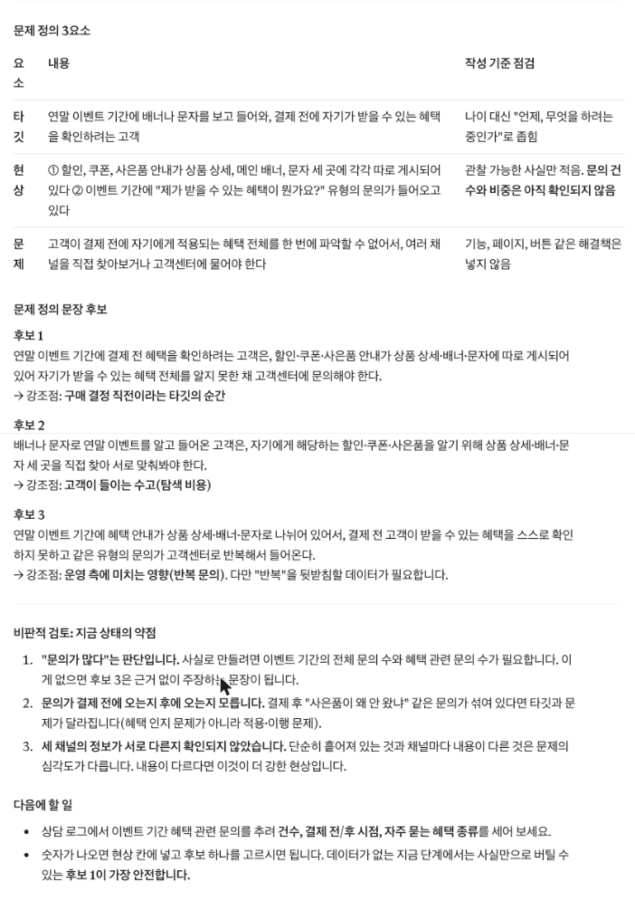
점검·피드백1-5. 점검·피드백
AI가 만든 초안이나 내가 채운 템플릿을 그대로 쓰지 않고, 기준을 주고 점검받아요. 칭찬 말고 고칠 점을 받는 게 목적이에요.
요청: 내 문제 정의를 3요소 기준으로 점검해 줘. 칭찬은 빼고 고칠 점만 말해 줘 내용: 문제 정의: [연말 선물을 고르는 이커머스 셀렉트마켓 기존 고객은 진행 중인 연말 할인·혜택을 한곳에서 확인하기 어려워, 혜택을 모른 채 다른 쇼핑몰에서 선물을 사는 일을 겪는다.] 형식: 표(타깃·현상·문제 각각 O/△/X와 이유) + 고친 문장 1개. 내가 주지 않은 숫자는 추가하지 마
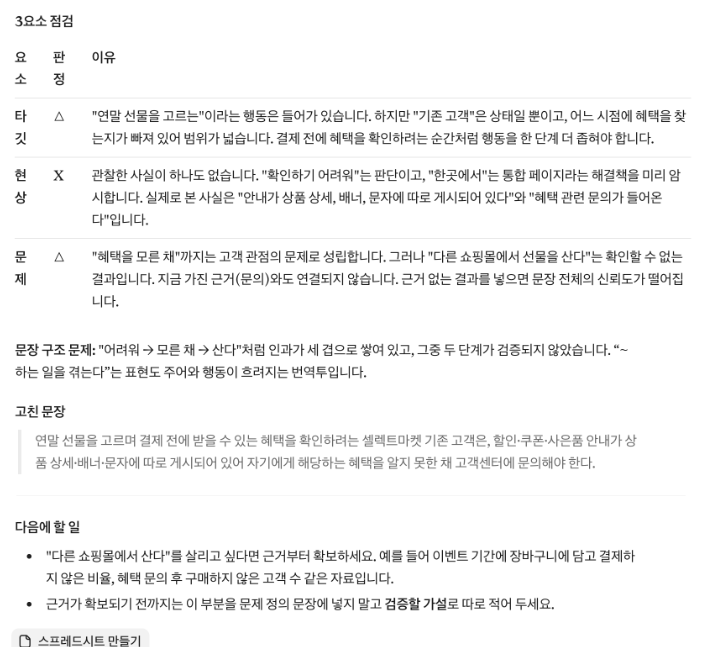
실패 케이스1-6. 실패 케이스 만들어 보기
일부러 틀리게 해 보고, 결과가 어떻게 달라지는지 확인해요.
| 만들어 볼 실패 | 이렇게 해 봐요 | 무엇이 보이고, 어떻게 풀까 |
|---|---|---|
| 해결책을 문제로 쓰기 | '연말 이벤트 페이지가 없다'를 그대로 점검 프롬프트에 넣어 봐요. | AI가 '해결책이 섞였다'고 지적해요. 페이지 대신 고객이 겪는 일을 적어요. |
| 타깃을 넓게 쓰기 | 타깃에 '20~30대 고객'만 넣어 봐요. | 문장 후보 3개가 서로 너무 비슷하거나 막연해져요. 상황(언제·어디서·무엇을 하다가)을 더해요. |
결과 만들기1-7. 결과 만들기
이렇게 보이면 성공점검 프롬프트에서 세 칸 모두 O가 나왔다
5 Whys로 진짜 원인 찾기
개념2-1. 개념
눈에 보이는 현상만 고치면 같은 문제가 다시 생겨요. '왜 이런 일이 생길까?'를 반복해서 바꿀 수 있는 규칙·화면·정책까지 내려가요. 다섯 번을 꼭 채울 필요는 없고, '이걸 바꾸면 현상이 줄겠다'는 원인이 나오면 멈춰요. 사람 탓에서 멈추면 아직 덜 내려간 거예요.
출처: 김수정, 「AI 프로토타입으로 배우는 데이터 서비스기획」 3.5.2 진짜 문제 찾기 — 5 Whys
예시2-2. 채워진 예시
이커머스 셀렉트마켓 문제 정의로 5 Whys를 해 본 예시예요. 첫 현상은 '다른 쇼핑몰에서 산다'였지만, 근본 원인은 '혜택을 한곳에 모으는 운영 규칙이 없다'에 가까워요. 그래서 해결 방향은 배너를 하나 더 다는 것이 아니라 혜택을 한 페이지에 모으는 것이 돼요.
| 단계 | 질문 | 답 |
|---|---|---|
| WHY 1 | 왜 고객이 다른 쇼핑몰에서 선물을 살까? | 셀렉트마켓의 연말 혜택을 몰랐다 |
| WHY 2 | 왜 혜택을 몰랐을까? | 혜택이 상품 상세·배너·문자에 흩어져 있어 한눈에 보이지 않는다 |
| WHY 3 | 왜 흩어져 있을까? | 할인은 영업팀, 쿠폰은 마케팅팀, 사은품은 MD팀이 각자 공지한다 |
| WHY 4 · 근본 원인 | 왜 각자 공지할까? | 연말 혜택을 한곳에 모아 알리는 운영 규칙(공지 창구)이 없다 |
| 해결 방향 | — | 연말 혜택을 한 페이지에 모으고, 미리 신청한 고객에게 알린다 |
실습 템플릿2-3. 실습 템플릿
예시를 보고 빈칸을 내 내용으로 채워요. 손으로 다 채우지 못해도 괜찮아요. 다음 단계에서 AI로 채우는 방법을 연습해요.
| 단계 | 질문 | 답 |
|---|---|---|
| WHY 1 | 왜 [문제]가 생길까? | |
| WHY 2 | ||
| WHY 3 | ||
| WHY 4 | ||
| WHY 5 (필요하면) | ||
| 근본 원인 | — | |
| 해결 방향 | — |
단계 | 질문 | 답 WHY 1 | 왜 [문제]가 생길까? | WHY 2 | | WHY 3 | | WHY 4 | | WHY 5 (필요하면) | | 근본 원인 | — | 해결 방향 | — |
프롬프트로 시작하기2-4. 프롬프트로 시작하기
템플릿을 손으로 채우는 대신 AI에게 초안을 받아요. [ ] 안은 이커머스 셀렉트마켓 예시 값이에요. 내 내용으로 바꿔 써요.
요청: 5 Whys를 진행해 줘. 한 번에 '왜?' 질문 하나만 하고 내 답을 기다려. 내 답이 추상적이면 실제 상황을 다시 물어봐. 바꿀 수 있는 원인이 나오면 다섯 번 전이라도 멈춰 내용: 문제: [연말 선물을 고르는 이커머스 셀렉트마켓 기존 고객은 진행 중인 연말 할인·혜택을 한곳에서 확인하기 어려워, 혜택을 모른 채 다른 쇼핑몰에서 선물을 사는 일을 겪는다.] 형식: 질문은 한 번에 하나. 마지막에 표(현상 / 원인 후보 / 근거 / 더 확인할 것)
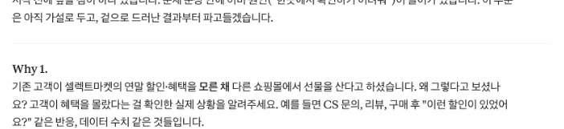
점검·피드백2-5. 점검·피드백
AI가 만든 초안이나 내가 채운 템플릿을 그대로 쓰지 않고, 기준을 주고 점검받아요. 칭찬 말고 고칠 점을 받는 게 목적이에요.
요청: 내 5 Whys 결과를 점검해 줘 내용: WHY 1~4와 근본 원인: [다른 쇼핑몰에서 산다 → 혜택을 몰랐다 → 혜택이 흩어져 있다 → 팀마다 따로 공지한다 → 혜택을 한곳에 모으는 운영 규칙이 없다] 형식: 표(단계 / 논리가 이어지나 O·△·X / 이유). 마지막 원인이 사람 탓인지, 바꿀 수 있는 것(화면·정보·정책)인지 판정
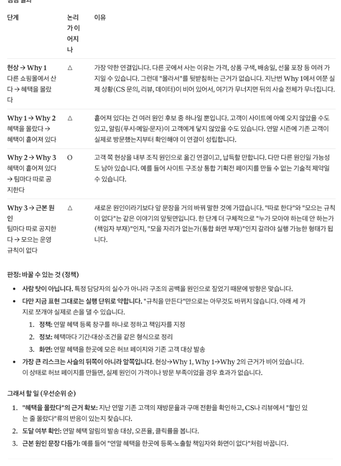
실패 케이스2-6. 실패 케이스 만들어 보기
일부러 틀리게 해 보고, 결과가 어떻게 달라지는지 확인해요.
| 만들어 볼 실패 | 이렇게 해 봐요 | 무엇이 보이고, 어떻게 풀까 |
|---|---|---|
| AI에게 답까지 쓰게 하기 | '5 Whys를 다 채워 줘'라고만 해 봐요. | AI가 그럴듯한 원인을 지어내요. 내 경험이 없는 원인은 근거 칸이 비어요. 질문만 받고 답은 내가 써요. |
| 사람 탓에서 멈추기 | 마지막 답을 '고객이 꼼꼼히 안 봐서'로 끝내 봐요. | 점검 프롬프트가 '바꿀 수 없는 원인'으로 판정해요. 한 번 더 '왜?'를 물어요. |
결과 만들기2-7. 결과 만들기
이렇게 보이면 성공근본 원인이 화면·정보·정책 중 하나다
가설과 지표 1개 정하기
개념3-1. 개념
가설이 있어야 '잘 됐다'를 판정할 수 있어요. 가설은 '[타깃]이 [행동]한다면, [변화]가 생길 것이다. 왜냐하면 [근거] 때문이다' 형식으로 써요. 지표는 가설이 맞았는지 보여 주는 신호등이에요. 많을수록 좋은 게 아니라, 누가 봐도 명확한 하나가 더 강해요.
| 서비스 | 문제 상황 | 가설(요약) | 핵심 지표 |
|---|---|---|---|
| 출석 체크 앱 | 출석을 수기로 관리해 누락이 잦다 | QR로 출석하면 누락이 줄 것이다 | 출석 누락률 |
| 중고거래 플랫폼 | 상대를 믿을 수 없어 거래를 포기한다 | 후기·인증 배지를 보여 주면 거래 완료율이 오를 것이다 | 채팅 시작 대비 거래 완료율 |
| 온라인 강의 | 난이도를 몰라 맞지 않는 강의를 결제한다 | 난이도를 미리 보여 주면 환불이 줄 것이다 | 결제 후 7일 이내 환불률 |
출처: 김수정, 「AI 프로토타입으로 배우는 데이터 서비스기획」 3.5.3 문제정의를 가설과 지표로 정리하기
예시3-2. 채워진 예시
이커머스 셀렉트마켓 예시예요. 처음에는 '방문 대비 신청 완료율' 하나만 골랐는데, 점검 프롬프트(아래 실행 결과)에서 '신청이라는 행동만 세고 구매 증가는 못 센다'는 이유로 약함 판정을 받았어요. 그래서 가설의 [변화]를 직접 세는 지표를 핵심으로 올리고, 신청 완료율은 보조로 내렸어요.
| 항목 | 작성 내용 |
|---|---|
| 가설 | [연말 선물을 고르는 기존 고객]이 [한 페이지에서 연말 혜택을 확인하고 사전 신청]한다면, [이벤트 기간에 셀렉트마켓에서 선물을 사는 고객이 늘어날] 것이다. 왜냐하면 [혜택을 몰라 다른 쇼핑몰로 가던 이유가 사라지기] 때문이다. |
| 핵심 지표(가설 판정) | 사전 신청 고객 중 이벤트 기간에 실제로 구매한 비율 |
| 계산 방법 | 이벤트 기간 구매한 사전 신청 고객 수 ÷ 사전 신청 고객 수 (주문 데이터와 연결해야 셀 수 있음) |
| 보조 지표(행동 확인) | 이벤트 페이지 방문 대비 사전 신청 완료율 · 목표 20% (목표값, 근거는 이후 확인) |
| 버린 후보와 이유 | 연말 매출: 이벤트 말고도 영향을 주는 게 많아 가설과 바로 이어지지 않는다 |
실습 템플릿3-3. 실습 템플릿
예시를 보고 빈칸을 내 내용으로 채워요. 손으로 다 채우지 못해도 괜찮아요. 다음 단계에서 AI로 채우는 방법을 연습해요.
| 항목 | 작성 내용 |
|---|---|
| 가설 | [타깃]이 [행동]한다면, [변화]가 생길 것이다. 왜냐하면 [근거] 때문이다. |
| 핵심 지표(가설 판정) | |
| 계산 방법 | |
| 보조 지표(행동 확인)·목표값 | |
| 버린 후보와 이유 |
항목 | 작성 내용 가설 | [타깃]이 [행동]한다면, [변화]가 생길 것이다. 왜냐하면 [근거] 때문이다. 핵심 지표(가설 판정) | 계산 방법 | 보조 지표(행동 확인)·목표값 | 버린 후보와 이유 |
프롬프트로 시작하기3-4. 프롬프트로 시작하기
템플릿을 손으로 채우는 대신 AI에게 초안을 받아요. [ ] 안은 이커머스 셀렉트마켓 예시 값이에요. 내 내용으로 바꿔 써요.
요청: 내 문제 정의를 가설 형식으로 바꾸고, 가설을 확인할 지표 후보 3개를 추천해 줘
내용: 문제 정의: [연말 선물을 고르는 이커머스 셀렉트마켓 기존 고객은 진행 중인 연말 할인·혜택을 한곳에서 확인하기 어려워, 혜택을 모른 채 다른 쇼핑몰에서 선물을 사는 일을 겪는다.] / 근본 원인: [연말 혜택을 한곳에 모아 알리는 운영 규칙이 없다]
형식: 가설 1문장('[타깃]이 [행동]하면 [변화]할 것이다. 왜냐하면 [근거]') + 표(지표 / 계산 방법 / 이벤트 페이지에서 실제로 셀 수 있는지 예·아니오). 숫자 목표는 추측하지 마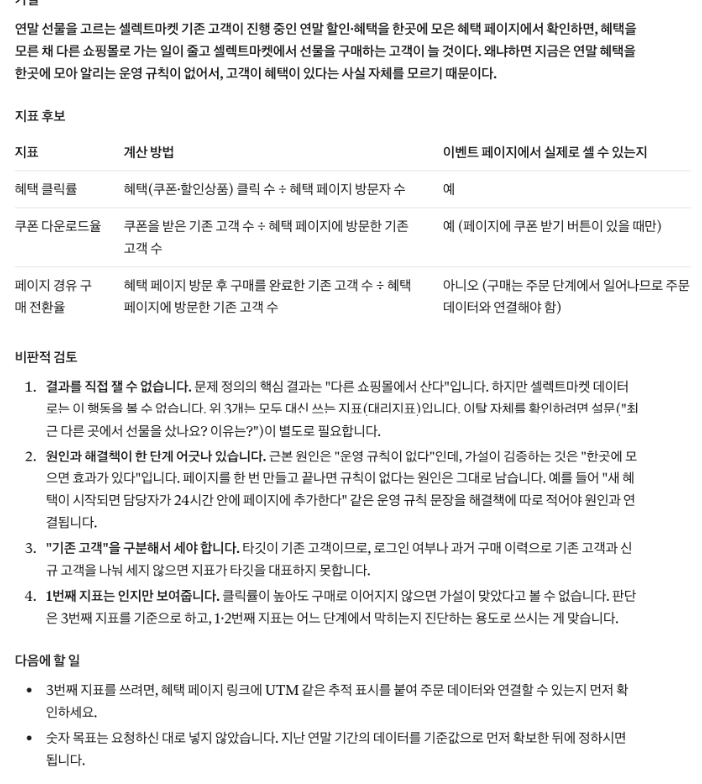
점검·피드백3-5. 점검·피드백
AI가 만든 초안이나 내가 채운 템플릿을 그대로 쓰지 않고, 기준을 주고 점검받아요. 칭찬 말고 고칠 점을 받는 게 목적이에요.
요청: 내 가설과 지표가 직접 연결되는지 점검해 줘 내용: 가설: [[연말 선물을 고르는 기존 고객]이 [한 페이지에서 연말 혜택을 확인하고 사전 신청]한다면, [이벤트 기간에 셀렉트마켓에서 선물을 사는 고객이 늘어날] 것이다. 왜냐하면 [혜택을 몰라 다른 쇼핑몰로 가던 이유가 사라지기] 때문이다.] / 지표: [이벤트 페이지 방문 대비 사전 신청 완료율] 형식: 연결됨·약함·안 됨 판정 + 이유 2줄 + 이 지표로 가설이 틀렸다고 판단할 수 있는 상황 1개
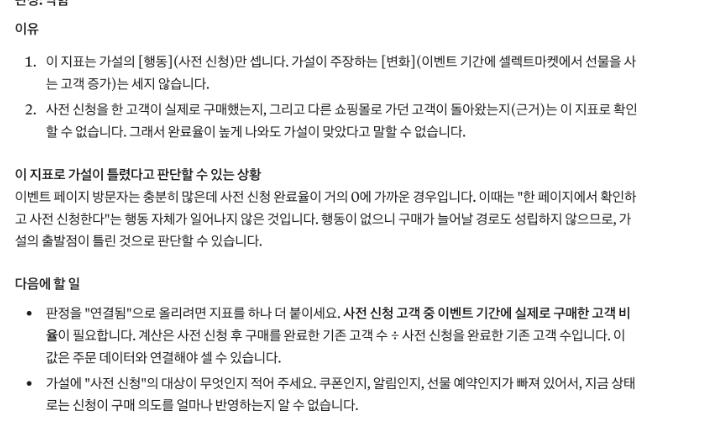
실패 케이스3-6. 실패 케이스 만들어 보기
일부러 틀리게 해 보고, 결과가 어떻게 달라지는지 확인해요.
| 만들어 볼 실패 | 이렇게 해 봐요 | 무엇이 보이고, 어떻게 풀까 |
|---|---|---|
| 셀 수 없는 지표 고르기 | 지표를 '고객 만족도'로 넣고 점검해 봐요. | AI가 '이벤트 페이지에서 바로 셀 수 없다'고 판정해요. 버튼 클릭·신청 완료처럼 셀 수 있는 행동으로 바꿔요. |
| 지표 여러 개 고르기 | 지표를 5개 넣어 봐요. | 무엇이 성공인지 판단이 갈려요. 하나만 남기고 나머지는 '버린 후보' 칸으로 옮겨요. |
결과 만들기3-7. 결과 만들기
이렇게 보이면 성공점검 프롬프트에서 '연결됨' 판정이 나왔다. '약함'이면 가설의 [변화]를 세는 지표로 바꿔 다시 점검했다
문제정의서로 이벤트 페이지 v1 만들기
개념4-1. 개념
이번엔 '예쁜 페이지 만들어 줘'가 아니라 문제정의서를 근거로 요청해요. 근거가 있으면 AI 결과를 '맞다·틀리다'로 판단할 수 있어요. 요청서에는 문제·가설과 함께 '꼭 있어야 할 것'과 '넣지 말 것'을 적어요. 코드는 보지 않고 미리보기 화면만 보고 판단해요.
왼쪽 위 '새로 만들기'로 새 대화를 열고 가운데 입력창에 요청서를 붙여 넣어요. 화면을 요청하면 답변 옆에 아티팩트 창이 열려요.
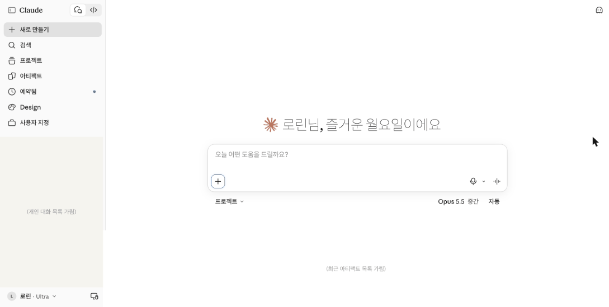
예시4-2. 채워진 예시
문제정의서를 화면 요청서로 옮긴 예시예요. '넣지 말 것'이 있으면 AI가 멋대로 추가하는 일이 줄어요.
| 항목 | 작성 내용 |
|---|---|
| 문제 정의 | 연말 혜택을 한곳에서 확인하기 어려워 다른 쇼핑몰에서 선물을 산다 |
| 가설 | 한 페이지에서 혜택을 확인하고 사전 신청하면 이벤트 기간 구매가 늘 것이다 |
| 꼭 있어야 할 것 | 이벤트 소개 한 줄, 혜택 3가지(할인·쿠폰·사은품), 사전 신청 폼(이름·연락처·관심 선물 카테고리·개인정보 동의), 마감일 12월 15일 |
| 넣지 말 것 | 로그인, 결제, 실제 회사 로고, 지어낸 고객 후기 |
| 화면 조건 | 한 페이지, 휴대폰에서도 보이게 |
실습 템플릿4-3. 실습 템플릿
예시를 보고 빈칸을 내 내용으로 채워요. 손으로 다 채우지 못해도 괜찮아요. 다음 단계에서 AI로 채우는 방법을 연습해요.
| 항목 | 작성 내용 |
|---|---|
| 문제 정의 | |
| 가설 | |
| 꼭 있어야 할 것 | |
| 넣지 말 것 | |
| 화면 조건 |
항목 | 작성 내용 문제 정의 | 가설 | 꼭 있어야 할 것 | 넣지 말 것 | 화면 조건 |
프롬프트로 시작하기4-4. 프롬프트로 시작하기
템플릿을 손으로 채우는 대신 AI에게 초안을 받아요. [ ] 안은 이커머스 셀렉트마켓 예시 값이에요. 내 내용으로 바꿔 써요.
요청: 연말 이벤트 사전 신청 페이지 한 장을 아티팩트로 만들어 줘. 코드 설명은 하지 말고 미리보기로 보여 줘 내용: 문제 정의: [연말 혜택을 한곳에서 확인하기 어려워 다른 쇼핑몰에서 선물을 산다] / 가설: [한 페이지에서 혜택을 확인하고 사전 신청하면 이벤트 기간 구매가 늘 것이다] / 꼭 있어야 할 것: [이벤트 소개 한 줄, 혜택 3가지(할인·쿠폰·사은품), 사전 신청 폼(이름·연락처·관심 선물 카테고리·개인정보 동의), 마감일 12월 15일] / 넣지 말 것: [로그인, 결제, 실제 회사 로고, 지어낸 고객 후기] 형식: 서비스 이름은 이커머스 셀렉트마켓, 한 페이지, 휴대폰에서도 보이게
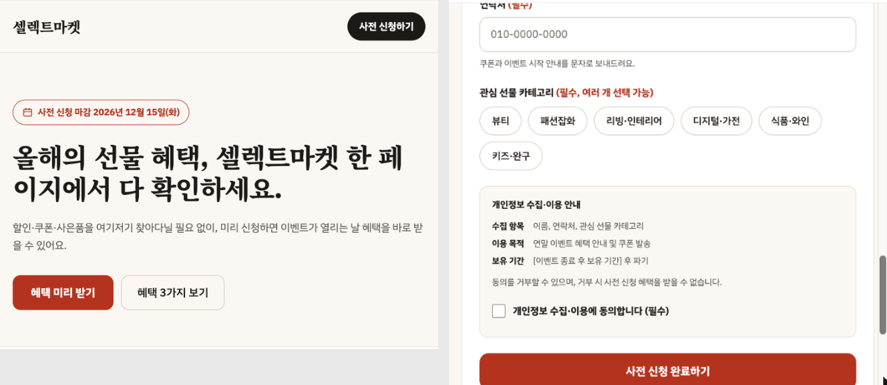
점검·피드백4-5. 점검·피드백
AI가 만든 초안이나 내가 채운 템플릿을 그대로 쓰지 않고, 기준을 주고 점검받아요. 칭찬 말고 고칠 점을 받는 게 목적이에요.
요청: 방금 만든 페이지를 내 요청서와 비교해서 점검해 줘. 화면은 고치지 말고 점검만 해 내용: 요청서: [위에서 쓴 꼭 있어야 할 것 / 넣지 말 것] 형식: 표(요청 항목 / 화면에 있음·없음·다름 / 위치). 요청에 없는데 추가된 것도 따로 적어
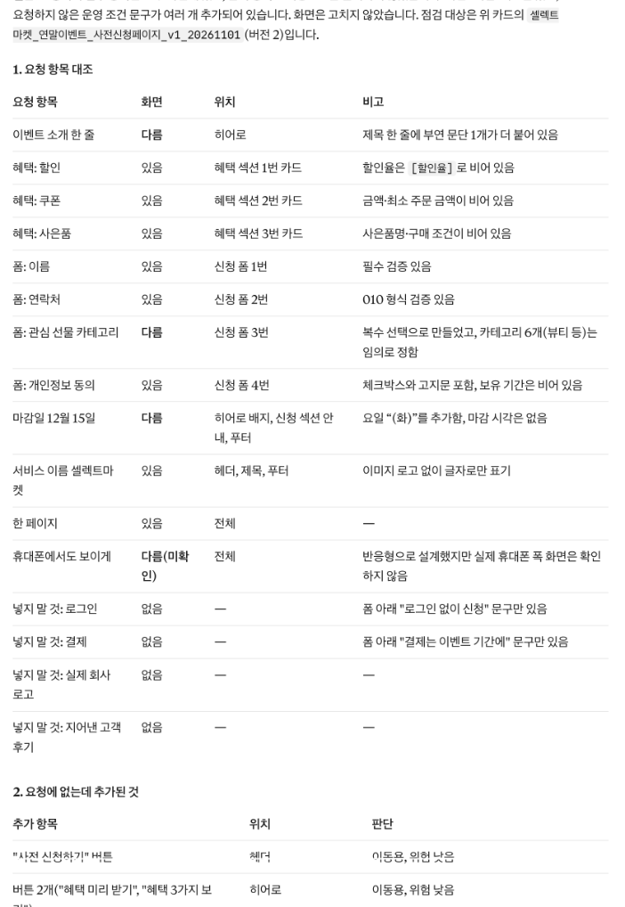
실패 케이스4-6. 실패 케이스 만들어 보기
일부러 틀리게 해 보고, 결과가 어떻게 달라지는지 확인해요.
| 만들어 볼 실패 | 이렇게 해 봐요 | 무엇이 보이고, 어떻게 풀까 |
|---|---|---|
| 근거 없이 요청하기 | 새 대화에서 '연말 이벤트 페이지 예쁘게 만들어 줘'만 보내 봐요. | 혜택·신청 폼이 빠지거나 지어낸 후기가 들어가요. v1과 나란히 놓고 차이를 적어요. |
| 코드부터 읽기 | 아티팩트의 코드 탭부터 열어 봐요. | 무엇이 맞는지 판단할 수 없어요. 미리보기로 돌아와 요청서와 비교해요. |
결과 만들기4-7. 결과 만들기
이렇게 보이면 성공점검표에서 '없음'이 0개이거나, 없는 항목을 다음 수정 요청서에 옮겼다
수정 요청서로 UX·UI 바꾸기
개념5-1. 개념
수정은 한 번에 하나씩 해야 무엇이 바뀌었는지 알 수 있어요. 수정 요청서에는 '바꿀 것', '바꾸는 이유(가설과 연결)', '그대로 둘 것'을 적어요. 특히 '그대로 둘 것'을 쓰지 않으면 AI가 다른 곳까지 바꿔요. 요청과 결과를 표로 남기는 게 오늘의 진짜 결과물이에요.
예시5-2. 채워진 예시
v1을 다섯 번 고친 수정 기록 예시예요. 순서는 정보 위치 → 상태 문구 → 휴대폰 → 색·글꼴처럼 가설에 가까운 것부터 해요.
| 번호 | 바꿀 것 | 이유(가설과 연결) | 그대로 둘 것 | 결과 |
|---|---|---|---|---|
| 1 | 혜택 3가지를 첫 화면 위쪽으로 | 혜택을 먼저 봐야 신청한다 | 신청 폼 항목 | 의도대로 |
| 2 | 마감까지 남은 날짜 표시 | 미루지 않고 신청하게 | 나머지 전부 | 의도대로 |
| 3 | 빈칸·형식 오류·신청 완료 문구 | 실패해도 다시 신청하게 | 레이아웃 | 문구 1개 누락 → 재요청 |
| 4 | 폭 600px보다 좁을 때만 한 줄 배치 | 휴대폰 방문이 많다 | 넓은 화면 | 의도대로 |
| 5 | 주 색 1개, 보조 색 1개로 정리 | 혜택 강조 | 배치 | 의도대로 |
실습 템플릿5-3. 실습 템플릿
예시를 보고 빈칸을 내 내용으로 채워요. 손으로 다 채우지 못해도 괜찮아요. 다음 단계에서 AI로 채우는 방법을 연습해요.
| 번호 | 바꿀 것 | 이유(가설과 연결) | 그대로 둘 것 | 결과 |
|---|---|---|---|---|
| 1 | ||||
| 2 | ||||
| 3 | ||||
| 4 | ||||
| 5 |
번호 | 바꿀 것 | 이유(가설과 연결) | 그대로 둘 것 | 결과 1 | | | | 2 | | | | 3 | | | | 4 | | | | 5 | | | |
프롬프트로 시작하기5-4. 프롬프트로 시작하기
템플릿을 손으로 채우는 대신 AI에게 초안을 받아요. [ ] 안은 이커머스 셀렉트마켓 예시 값이에요. 내 내용으로 바꿔 써요.
요청: 이 페이지에서 하나만 바꿔 줘. 다른 부분은 그대로 둬 내용: 바꿀 것: [신청 폼에서 이름 빈칸, 연락처 형식 오류, 신청 완료일 때 보여 줄 안내 문구 추가] / 이유: [실패해도 고객이 다시 신청하게] / 그대로 둘 것: [레이아웃, 색, 혜택 영역] 형식: 바꾼 부분 3줄 요약 + 미리보기
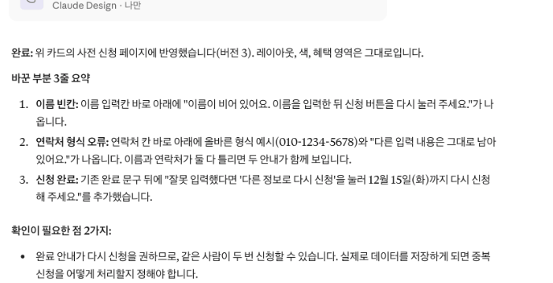
점검·피드백5-5. 점검·피드백
AI가 만든 초안이나 내가 채운 템플릿을 그대로 쓰지 않고, 기준을 주고 점검받아요. 칭찬 말고 고칠 점을 받는 게 목적이에요.
요청: 방금 수정 전후를 비교해 줘 내용: 요청한 것: [안내 문구 3개 추가] / 그대로 둘 것: [레이아웃, 색, 혜택 영역] 형식: 표(요청한 변경 / 실제로 바뀐 것 / 바뀌면 안 되는데 바뀐 것). 마지막에 수정 기록표 한 줄
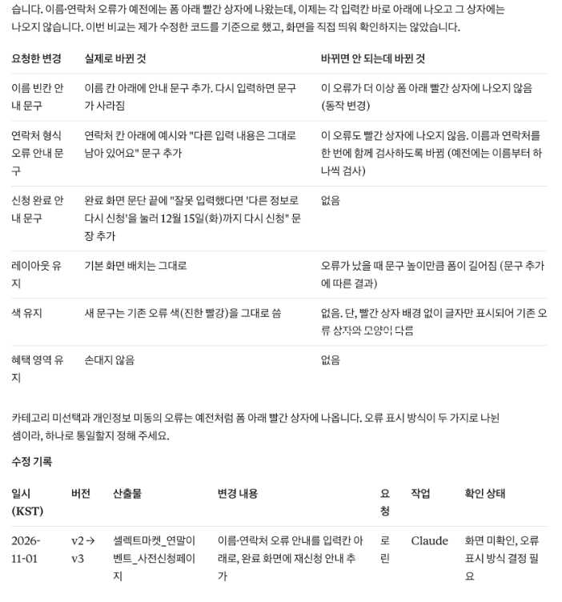
실패 케이스5-6. 실패 케이스 만들어 보기
일부러 틀리게 해 보고, 결과가 어떻게 달라지는지 확인해요.
| 만들어 볼 실패 | 이렇게 해 봐요 | 무엇이 보이고, 어떻게 풀까 |
|---|---|---|
| 한 번에 여러 개 고치기 | 색·배치·문구를 한 프롬프트로 바꿔 달라고 해 봐요. | 무엇 때문에 좋아졌는지(또는 망가졌는지) 알 수 없어요. 되돌리고 하나씩 다시 해요. |
| '그대로 둘 것' 빼기 | '휴대폰에서 보기 좋게 해 줘'만 보내 봐요. | 넓은 화면까지 휴대폰처럼 바뀌어요. 폭 기준(600px 등)과 그대로 둘 것을 적어요. |
결과 만들기5-7. 결과 만들기
이렇게 보이면 성공기록표의 '결과' 칸이 모두 채워졌다
오늘 정리와 과제
오늘의 규칙 3줄
- 문제 정의에는 해결책을 쓰지 않는다
- 가설과 지표가 있어야 화면을 '맞다·틀리다'로 판단한다
- 수정은 한 번에 하나, '그대로 둘 것'을 함께 쓴다
문제정의서 1장(3요소·5 Whys·가설·지표) + 이벤트 페이지 v2 + 수정 기록표
문제정의서에 오늘 고른 문제 정의를 넣고, 수정 기록표에 1줄을 더해 와요.